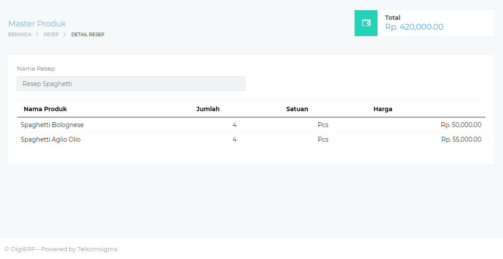

Welcome to
Aneka Resep Masakan Sederhana dan Praktis | Yummy App
2021.03.31 16:59Cari Resep Fitur Memasak Fitur Komunitas Fitur Filter Harga | | × Download Sekarang
Kategori
Makanan Pembuka Makanan Utama Makanan Penutup Cemilan Minuman Makanan PendampingResep Terbaru
50 menitKetupat Kare Ayam
( 4 ) 20 menitJamur Dalam Sayap
( 4 ) 60 menitBubur Mutiara
( 4 ) 50 menitSalmon Kuah Asam Pedas
( 4 ) 20 menitOyakodon
( 4 ) 40 menitNimbu Pani
( 4 )Jelajah Kuliner Nusantara
view all 60 menitAyam Cincane
( 4 ) 60 menitKepiting Soka Krispi
( 4 ) 60 menitMie Celor
( 4 ) 60 menitMie Aceh
( 4 ) 60 menitKue Paso
( 4 )